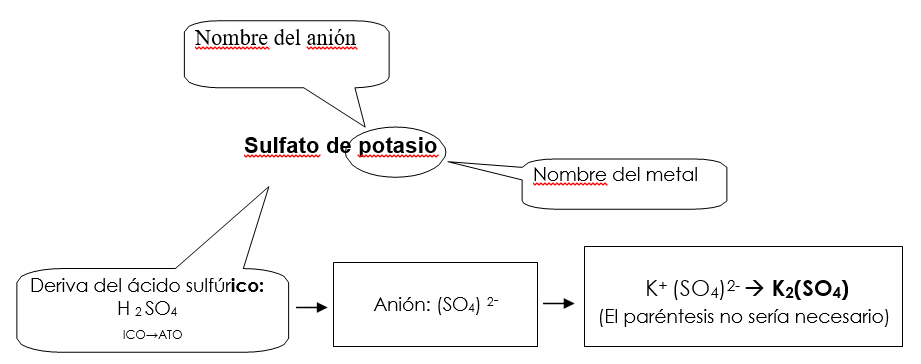

Las oxisales o sales ternarias, son compuestos formados por un metal, un no metal y oxígeno. Son consideradas como las sales de los ácidos oxoácidos, ya que éstas se forman por la sustitución de los hidrógenos del oxoácido por un metal.
FORMULACIÓN
Para formularlas basta reemplazar los hidrógenos del oxoácido por un metal. La valencia del metal se coloca como subíndice del grupo (anión) que queda después de quitar el hidrógeno. Como subíndice del metal se pone el número de hidrógenos sustituidos.
La fórmula general de las oxisales es:
Ma(XbOc)n
donde M es el elemento metálico, X es el elemento no metálico y O es el oxígeno. Los valores de a, b y c corresponden a los valores del oxoácido del que procede y n es la valencia del elemento metálico. Los subíndices a y n se simplifican si es posible
NOMENCLATURA
NOMENCLATURA TRADICIONAL
Es la usada para los ácidos más comunes, se cambia la terminación -OSO por -ITO y la terminación -ICO por -ATO.
RECUERDA: “Cuando el OSO toca el pITO, el mICO pasa el plATO"
Además se suprime la palabra “ácido” y detrás se coloca el metal que ha sustituido al Hidrógeno, indicando su número de oxidación con sufijos o mediante números romanos (stock)

NOMENCLATURA NUMEROS DE OXIDACIÓN:
Se nombra de forma similar a la nomenclatura tradicional seguido del elemento metálico indicando la valencia con la que actúa en números romanos entre paréntesis.
- Fe2(S04)3: sulfato de hierro (III)
- NaClO2: cloríto de sodio, cuando el elemento metálico sólo tiene una valencia no se indica su número de oxidación, en este caso no se usaría clorito de sodio (I)
|
|
TRADICIONAL |
NÚMEROS DE OXIDACIÓN |
|
Na2SO3 |
Sulfito sódico |
Sulfito de sodio |
|
Zn2SiO4 |
Metasilicato cíncico |
Silicato de cinc |
|
Cu2SO4 |
Sulfato cuproso |
Sulfato de cobre(I) |
|
NaClO |
Hipoclorito sódico |
Hipoclorito de sodio |
|
NaClO3 |
Clorato sódico |
Clorato de sodio |
|
Fe(BrO3)3 |
Bromato férrico |
Bromato de hierro(III) |
|
Cr(NO3)3 |
Nitrato crómico |
Nitrato de cromo (III) |
|
Li2SO4 |
Sulfato lítico |
Sulfato de litio |